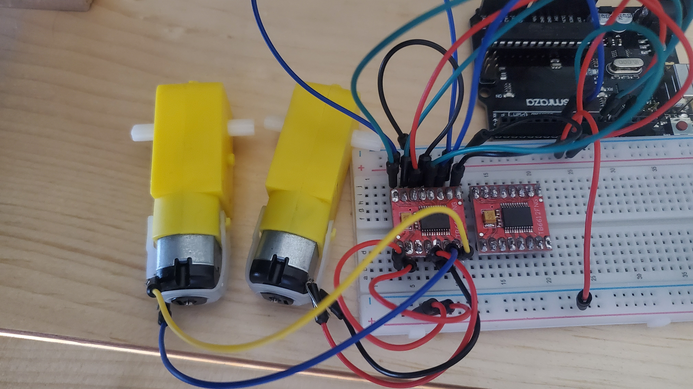
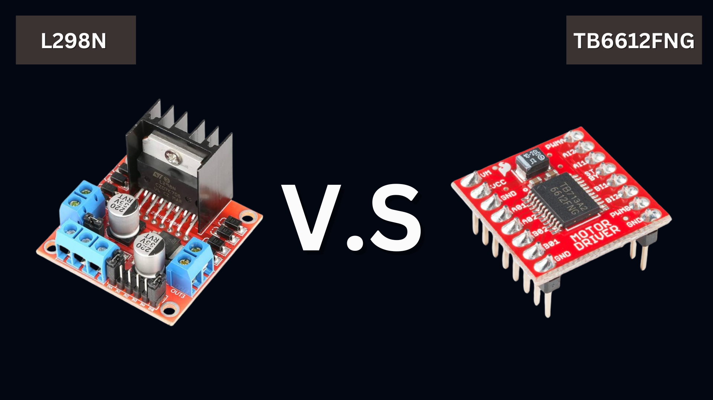

A review on the TB6612FNG H-Bridge
I was in search of an effective H-bridge that would drive two motors in my Arduino project. After careful consideration, I chose the TB6612FNG. Among others, this was due to its features and efficiency, besides compatibility with the requirement of the project.

The TB6612FNG is a dual motor driver able to drive two motors at up to 1.2A of constant current. It's a cheap and easy way to get your motors running. This H-bridge allows not just controlling the direction and speed of your motors, but also stopping and braking. Motor working voltage in the range from 2.7 to 13.5V. It also features built-in overheat shut-off and undervoltage detection circuits. Compared to other commercially available H-bridges, the TB6612FNG has the upper hand. First, it has a higher efficiency rating at 91 to 95%. Second, it is versatile in that it can be used to drive two motors at a time.
Finally, it's user-friendly with well laid out and clearly marked pinouts. Now, just like all components do, the TB6612FNG has its limitations. For instance, it cannot operate on applications that require more than 1.2A of continuous current. Further, even with the ability to run as low as 2.5V, it is derated on performance. In general, the TB6612FNG is a pretty good H-bridge for most Arduino projects since it is efficient, versatile, and fairly user-friendly. But, as with most things, component choice really needs to be based on your exact needs.
When compared to the L298N, the TB6612FNG is more efficient, smaller, and features a low-current standby mode. However, the L298N can handle larger motors and operates at a higher voltage and continuous current rating. Therefore, the choice between the two depends on the specific requirements of your project. While the TB6612FNG is ideal for projects requiring efficiency and space-saving, the L298N is better suited for applications requiring the control of larger motors or higher power.
There are many other H-bridges that work better for other uses—chiefly those intended for special features or more power. This makes comparison and checking of the contrast between different H-bridges quite handy before making a final decision. Overall, the TB6612FNG H-bridge is a great choice for my use cases.
One last thing, you can check out my github for a library based off of this H-bridge, it uses the serial-monitor to control the motors.